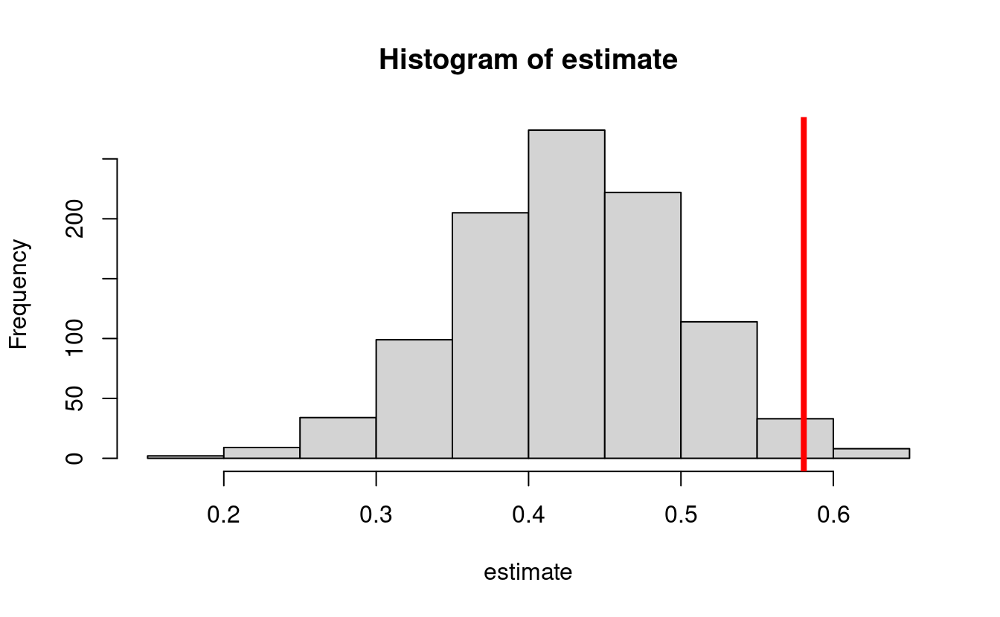

5 Preliminaries on semiparametric estimation
5.1 From causal to statistical quantities
- We have arrived at identification formulas that express quantities that we care about in terms of observable quantities
- This required causal assumptions
- Many of these assumptions are empirically unverifiable
- We saw an example where we could relax the cross-world assumption, at the cost of changing the parameter interpretation
- and where we could relax the positivity assumption, also at the cost of changing the parameter interpretation
- The resulting estimation problem can be tackled using statistical
assumptions of various degrees of strength
- Most of these assumptions are verifiable (e.g., a linear model)
- Thus, most are unnecessary (except for convenience)
- The estimation approach we use reduces reliance on these statistical assumptions
5.1.1 Computing identification formulas if you know the true distribution
- The mediation parameters that we consider can be seen as a function of the joint probability distribution of \(O=(W,A,Z,M,Y)\)
- For example, under identifiability assumptions the natural direct effect is equal to \[\begin{equation*} \psi(\P) = \E[\E\{\E(Y \mid A=1, M, W) - \E(Y \mid A=0, M, W)\mid A=0,W\}] \end{equation*}\]
- The notation \(\psi(\P)\) implies that the parameter is a function of \(\P\)
- This means that we can compute it for any distribution \(\P\)
- For example, if we know the true \(\P(W,A,M,Y)\), we can comnpute the true value
of the parameter by:
- Computing the conditional expectation \(\E(Y\mid A=1,M=m,W=w)\) for all values \((m,w)\)
- Computing the probability \(\P(M=m\mid A=0,W=w)\) for all values \((m,w)\)
- Computing the probability \(\P(W=w)\) for all values \(w\)
- Computing the mean over all values \((m,w)\)
5.1.2 Estimating identification formulas
The above is how you would compute the true value if you know the true distribution \(\P\)
- This is exactly what we did in our R examples before
- But we can use the same logic for estimation:
- Fit a regression to estimate, say \(\hat\E(Y\mid A=1,M=m,W=w)\)
- Fit a regression to estimate, say \(\hat\P(M=m\mid A=0,W=w)\)
- Estimate \(\P(W=w)\) with the empirical distribution
- Evaluate \[\begin{equation*} \psi(\hat\P) = \hat\E[\hat\E\{\hat\E(Y \mid A=1, M, W) - \hat\E(Y \mid A=0, M, W)\mid A=0,W\}] \end{equation*}\]
- This is known as the g-computation estimator
5.1.3 How can g-estimation be implemented in practice?
- There are two possible ways to do g-computation estimation:
- Using parametric models for the above regressions
- Using flexible data-adaptive regression (aka machine learning)
5.1.4 Pros and cons of parametric models
- Pros:
- Easy to understand
- Ease of implementation (standard regression software)
- Can use the Delta method or the bootstrap for computation of standard errors
- Cons:
- Unless \(W\) and \(M\) contain very few categorical variables, it is very easy to misspecify the models
- This can introduce sizable bias in the estimators
5.1.5 An example of the bias of a g-computation estimator of the natural direct effect
- The following
Rchunk provides simulation code to exemplify the bias of a g-computation estimator in a simple situation
mean_y <- function(m, a, w) abs(w) + a * m
mean_m <- function(a, w) plogis(w^2 - a)
pscore <- function(w) plogis(1 - abs(w))- This yields a true NDE value of
w_big <- runif(1e6, -1, 1)
trueval <- mean((mean_y(1, 1, w_big) - mean_y(1, 0, w_big)) *
mean_m(0, w_big) + (mean_y(0, 1, w_big) - mean_y(0, 0, w_big)) *
(1 - mean_m(0, w_big)))
print(trueval)
#> [1] 0.58048- Let’s perform a simulation where we draw 1000 datasets from the above distribution, and compute a g-computation estimator based on
gcomp <- function(y, m, a, w) {
lm_y <- lm(y ~ m + a + w)
pred_y1 <- predict(lm_y, newdata = data.frame(a = 1, m = m, w = w))
pred_y0 <- predict(lm_y, newdata = data.frame(a = 0, m = m, w = w))
pseudo <- pred_y1 - pred_y0
lm_pseudo <- lm(pseudo ~ a + w)
pred_pseudo <- predict(lm_pseudo, newdata = data.frame(a = 0, w = w))
estimate <- mean(pred_pseudo)
return(estimate)
}
estimate <- lapply(seq_len(1000), function(iter) {
n <- 1000
w <- runif(n, -1, 1)
a <- rbinom(n, 1, pscore(w))
m <- rbinom(n, 1, mean_m(a, w))
y <- rnorm(n, mean_y(m, a, w))
est <- gcomp(y, m, a, w)
return(est)
})
estimate <- do.call(c, estimate)
hist(estimate)
abline(v = trueval, col = "red", lwd = 4)
- The bias also affects the confidence intervals:
cis <- cbind(
estimate - qnorm(0.975) * sd(estimate),
estimate + qnorm(0.975) * sd(estimate)
)
ord <- order(rowSums(cis))
lower <- cis[ord, 1]
upper <- cis[ord, 2]
curve(trueval + 0 * x,
ylim = c(0, 1), xlim = c(0, 1001), lwd = 2, lty = 3, xaxt = "n",
xlab = "", ylab = "Confidence interval", cex.axis = 1.2, cex.lab = 1.2
)
for (i in 1:1000) {
clr <- rgb(0.5, 0, 0.75, 0.5)
if (upper[i] < trueval || lower[i] > trueval) clr <- rgb(1, 0, 0, 1)
points(rep(i, 2), c(lower[i], upper[i]), type = "l", lty = 1, col = clr)
}
text(450, 0.10, "n=1000 repetitions = 1000 ", cex = 1.2)
text(450, 0.01, paste0(
"Coverage probability = ",
mean(lower < trueval & trueval < upper), "%"
), cex = 1.2)
5.1.6 Pros and cons of g-computation with data-adaptive regression
- Pros:
- Easy to understand
- Alleviate model-misspecification bias
- Cons:
- Might be harder to implement depending on the regression procedures used
- No general approaches for computation of standard errors and confidence intervals
- For example, the bootstrap is not guaranteed to work, and it is known to fail in some cases
5.2 Semiparametric estimation (or correcting the bias of g-computation estimators)
- G-computation estimation with data-adaptive regression offers an incorrect bias/variance trade-off
- It accepts more bias than necessary
- The bias of a g-computation estimator may be corrected as follows: \[\begin{equation*} \psi(\hat \P) + \frac{1}{n}\sum_{i=1}^n D(O_i) \end{equation*}\] for some function \(D(O_i)\) of the data
- The function \(D(O)\) is called the efficient influence function (EIF)
- The EIF must be found on a case-by-case basis for each parameter \(\psi(\P)\)
- For example, for estimating the standardized mean \(\psi(\P)=\E[\E(Y\mid A=1, W)]\), we have \[\begin{equation*} D(O) = \frac{A}{\hat \P(A=1\mid W)}[Y - \hat\E(Y\mid A=1, W)] + \hat\E(Y\mid A=1, W) - \psi(\hat\P) \end{equation*}\]
- The EIF is found by using a distributional analogue of a Taylor expansion
- In this workshop we will omit the specific form of \(D(O)\) for some of the parameters that we use
- But the estimators we discuss and implement in the R packages will be based on these EIFs
- And the specific form of the EIF may be found in papers in the references
Note: the bias correction above may have an additional problem of returning parameter estimates outside of natural bounds. E.g., probabilities greater than one. A solution to this (not discussed in this workshop) is targeted minimum loss based estimation.